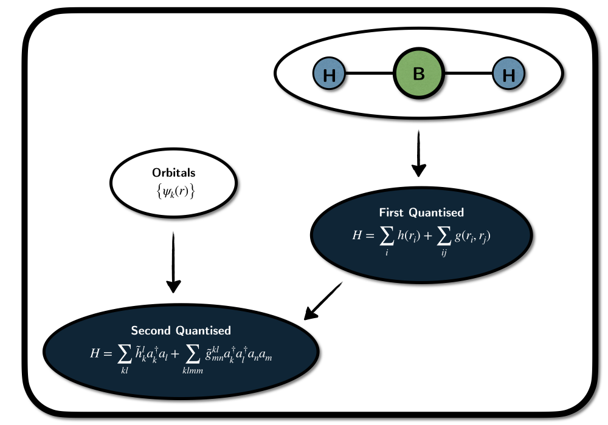

import tequila as tq
geometry = "Be 0.0 0.0 0.0"
mol = tq.Molecule(geometry=geometry, basis_set="6-31G")
c,h,g = mol.get_integrals(two_body_oderings="mulliken")converged SCF energy = -14.5667640335096Jakob Kottmann
November 10, 2022
What are electronic Hamiltonians and how can we construct them?

First Quantised Formulation:
- Hamiltonian is directly defined from the nuclear coordinates and charges
- Spin and Fermionic anti-symmetry need to be imposed on the wavefunctions
- Particle number is fixed
- Explicit computation of matrix representation unfeasible without approximations
Second Quantised Formulation:
- Needs a set of orbitals to be constructed - Spin and Fermionic anti-symmetry included in Hamiltonian
- Particle number is not fixed
- Explicit construction in finite basis feasible
The word molecule often stands for \(N_\text{e}\) electrons (with coordinatres \(r_k\)) moving in a potential created by atomic nuclei - assumed to be fixed point-charges with coordinates \(R_A\) and charges \(N_A\). The electronic Hamiltonian is then the operator expressing the interactions of the electrons in that potential \[H = \sum_{k}^{N_\text{e}} \left(T(r_k) + V_{\text{ne}}(r_k) \right) + \sum_{k}^{N_\text{e}} \sum_{l<k} V_{\text{ee}}(r_k,r_l) + V_\text{nn}.\] It is built from three parts and a constant, which are in atomic units:
1. kinetic energy of the electrons
\[T(r_k) = -\frac{1}{2} {\nabla^2_{r_k}} \]
2. Coulombic attraction between electrons and nuclear charges
\[V_{\text{ne}}(r) = \sum_{A \in \text{nuclei}} \frac{N_A}{\|r-R_A\|}\]
3. Coulombic repulsion between individual electrons
\[V_{\text{ee}}(r_k,r_l) = \frac{1}{\| r_k - r_l \|}\]
4. Coulombic repulsion between the nuclear charges
\[V_\text{nn} = \sum_{A<B} \frac{N_A N_B}{\|R_A - R_b\|} \]
which is just a constant for a given molecular structure.
With this, we have fully defined it and the corresponding ground state energy is given by the lowest eigenvalue of this differential operator. In order to make sure, that the groundstate describes an multi-electron system, restrictions have to be imposed on the wavefunction (Fermions have spin and anti-symmetric permutation symmetry.
As we are describing electrons, they need to obey fermionic antisymmetry. In first quantisation the Hamiltonian does not have that property included, so without restrictions on the wavefunctions if is supposed to act on it only describes \(N_{\text{e}}\) negatively charges point-particles without any permutation symmetries or spin.
Spin can be added conveniently by defining a single-electron wavefunction as a so called spin-orbital: A three dimensional function \(\psi(r) \in \mathcal{L}^2(\mathbb{R}^3)\), describing the electron in spatial space, augmented with a spin-state ${, } ^2. If the set of spatial orbitals \(\psi_k\) forms a complete basis in \(\mathcal{L}^2(\mathbb{R}^3)\) we have an exact description of the electron. A convenient notation is to express the spin component as a function of a spin-coordinate \(s\left\{-1,1\right\}\) and combine spin coordinate \(s\) and spatial coordinate \(r\) to \(x=(r,s)\). In a given set of \(M\) spatial orbital, an arbitrary one electron wavefunction can then be expressed as \[ \Psi(x) = \sum_k^{2M} c_k \phi(x) = \sum_{l}^{M} \psi_{l}(r)\otimes \left( c_{2l}\lvert \uparrow \rangle + c_{2l+1} \lvert \downarrow \rangle \right) \] with the spin-orbitals defined as \[ \phi_k = \psi_{\lfloor{i/2}\rfloor} \otimes \lvert \sigma(k) \rangle,\; \sigma_k=\begin{cases} \lvert \uparrow \rangle,\; k \text{ is even} \\ \lvert \uparrow \rangle,\; k \text{ is odd} \end{cases}. \] Many electron functions can then be expressed as linear combinations of anti-symmetric products of single electron functions (so called Slater-Determinants). \[ \Psi\left(x_1, \dots, x_{N_\text{e}}\right) = \sum_{m} d_m \det\left(\phi_{m_1},\dots, \phi_{m_{N_\text{e}}}\right) \ \]
Molecular Hamiltonians in second quantisations include of the Fermionic anti-symmetry. They are written as \[
H = V_\text{nn} + \sum_{ij} \tilde{h}^i{j}a^\dagger_i a_j \sum_{ijkl} \tilde{g}^{ij}_{kl} a^\dagger_i a^\dagger_j a_l a_k,
\] with the fermionic creation/annihilation operators that incorporate anti-symmetry through their anti-commuting properties. They are assembled from three parts:
- Constant term \(V_\text{nn}\) - one-body terms \[h^{i}_{j} a^\dagger_i a_j\] - two-body terms \[g^{ij}_{kl} a^\dagger_i a^\dagger_j a_l a_k\]
where the tensors \(h^{i}_{j}\) and \(g^{ij}_{kl}\) are integrals over the one- and two-body parts of the electronic Hamiltonian. The one-body part is the kinetic energy operator \(T(r)\) and the so-called external potential \(V(r)\) - the potential in which the electrons move. In the molecular case this potential is just the Coulomb potential from the nucleii \(V(r) = V_{\text{ne}(r)\)}. The one-body integrals are then given by \[ \tilde{h}^{i}_{j} = h^{\lfloor{i/2}\rfloor}_{\lfloor{j/2}\rfloor} \langle \sigma_i \vert \sigma_j \rangle \] with the spatial part \[ h^{k}_{l} = \langle \phi_k \rvert \left(T + V\right) \lvert \phi_l \rangle \equiv \int \psi^*_k(r) \left(T+V\right)\psi_l(r) \operatorname{d}r. \] In the same way, the spatial part of the two-body integrals is given by \[ g^{ij}_{kl} = \langle \phi_i \phi_j \rvert \frac{1}{|r_1-r_2|} \lvert \phi_k \phi_l \rangle \equiv \int \int \psi^*(r_1)_i \psi^*(r_2)_j \frac{1}{|r_1-r_2|} \psi_k(r_1) \psi_l(r_2) \operatorname{d}r_1 \operatorname{d}r_2. \] Note the three different short notations \[ \langle ij\vert kl \rangle \equiv \left(ik \vert jl \right) \equiv \left[ ij \vert lk \right] \] usually referred to as Dirac (physicist, 1212), Mulliken (chemist, 1122) and openfermion (google, 1221) notations. Depending on the convention used the meaning of the indices \(g_{ijkl}\) changes. This is a bit inconvenient, but we can’t change it anymore. Most quantum chemistry packages (pyscf, psi4) use the Mulliken convention, some quantum computing packages adopted the google convention and the Dirac convention is often found in papers. In the tequila package we tried to automatize most of it away for a user convenience. Here is a small example on how to get the integrals using tequila (with either pyscf or psi4 in the back):
Let’s look at first and second quantised Hamiltonians and wavefunctions in an explicit example: The Helium atom (charge \(N_\text{He}=2\) and nuclear coordinate \(R_\text{He} = (0,0,0)\)) in a basis of two spatial orbitals \(\left\{\psi_0, \psi_1 \right\}\).
For the neutral electron with 2 electrons, the Hamiltonian is:
\[
H(r_1,r_2) = -\frac{\nabla^2}{2} - \frac{\nabla^2}{2} - \frac{2}{\|r_1\|} - \frac{2}{\|r_2\|} + \frac{1}{\|r_1 - r_2 \|}
\] and a general two-electron Slater-determinant is written as
\[
\det\left(\phi_k,\phi_l\right) = \frac{1}{\sqrt{2}} \left( \phi_k(r_1) \phi_l(r_2) - \phi_l(r_1) \phi_k(r_2) \right).
\]
All possible Slater-determinants in the given basis:
closed-shell singlets (both electrons in the same spatial orbital):
\[
\det\left(\phi_0 \phi_1 \right) = \frac{1}{\sqrt{2}}\psi_0(r_1) \psi_0(r_1) \otimes \left( \lvert \downarrow \uparrow \rangle - \lvert \uparrow \downarrow \rangle \right)
\] \[
\det\left(\phi_3 \phi_4\right) = \frac{1}{\sqrt{2}}\psi_1(r_1) \psi_1(r_1) \otimes \left( \lvert \downarrow \uparrow \rangle - \lvert \uparrow \downarrow \rangle \right)
\]
open-shell polarized triplets:
\[
\det\left(\phi_1 \phi_3\right) = \left(\psi_0(r_1) \psi_1(r_2) + \psi_1(r_1) \psi_0(r_2)\right) \otimes \left( \lvert \uparrow \uparrow \rangle \right)
\]
\[ \det\left(\phi_2 \phi_4\right) = \left(\psi_0(r_1) \psi_1(r_2) + \psi_1(r_1) \psi_0(r_2)\right) \otimes \left( \lvert \downarrow \downarrow \rangle \right) \]
open-shell (with broken spin symmetry - recombinable into non-polarized triplet state and one additional singlet state):
\[
\det\left(\phi_0\phi_2\right) = \frac{1}{\sqrt{2}}\left(\phi_0(x_1) \phi_2(x_2) - \phi_2(x_1) \phi_0(x2) \right)
\] \[
\det\left(\phi_1\phi_3\right) = \frac{1}{\sqrt{2}}\left(\phi_1(x_1) \phi_3(x_2) - \phi_3(x_1) \phi_1(x2) \right)
\]
A general two-electron wavefunction can then be written as a linear combination of those 6 Determinants (note however, that the different spin-symmetries, i.e. the triplet and the two singlets, usually don’t mix) \[ \Psi(x_1,x_2) = \sum_{i<j\in\left\{0,1\right\}} d_{ij} \det\left(\phi_i\phi_j\right) \] Note how this always denotes a two-electron wavefunction. The electron number directly enters the definition of the first quantised Hamiltonian and therefore defines the space onto which the Hamiltonian acts.
For numerical procedures it is often necessary to directly express the Hamiltonian in the given basis. Here this would mean to compute all matrix elements \[ \langle \det\left(\phi_m\phi_n\right) H \det\left(\phi_k\phi_l\right) \rangle. \] In this two electron example this is no problem, the task of computing all matrix elements will however become unfeasible with growing electron number. Explicit computation of the Hamiltonian in the given basis is usually only performed within further approximations - e.g. truncated configuration interaction methods that only include slater determinants that differ in a specific number of orbitals from a given reference determinant.
In second quantisation it is sufficient to compute the one- and two-body integrals given above to define the Hamiltonian. They grow with the fourth power of the basis size rendering the task always feasible.
A general wavefunction can be constructed from all possible linear combinations of electronic configurations in the given spin-orbital basis - denoted by so called occupation vectors representing which spin orbitals are occupied and not. In this case we have 4 spin orbitals then therefore \(2^4=16\) different configurations:
vacuum \[\langle 0000 \rangle\] single electron \[ \lvert 1000 \rangle, \vert 0100 \rangle, \lvert 0010 \rangle, \lvert 0001\rangle, \] two electrons \[ \lvert 1100 \rangle, \lvert 0011 \rangle, \lvert 1001 \rangle, \lvert 0110 \rangle, \lvert 1010\rangle, \lvert 0101 \rangle, \] three electrons \[ \lvert 1110 \rangle, \lvert 1101 \rangle, \lvert 1011 \rangle, \lvert 0111 \rangle, \] and four-electrons \[ \lvert 1111 \rangle. \]
A general wavefunction is then given by
\[\lvert \Psi \rangle = \sum_{k=0}^{16} c_k \lvert \text{binary}(k) \rangle.\]